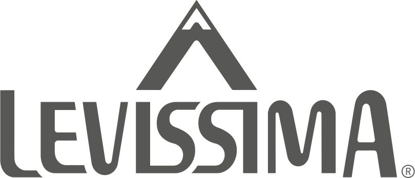

Automation and Control Engineer
Mattia Canclini
Neolaureato appassionato puntuale e determinato, orientato alla robotica e all’automazione industriale. Incline al lavoro di gruppo con riconosciuta capacità di coordinamento anche in progetti a breve scadenza.
Aggiornamenti più recenti
2017-2023
Politecnico di Milano
Laurea Magistrale in Automation and Control Engineering
2022-Oggi
Stelvio Automation
Automation and Control Engineer
Aziende
